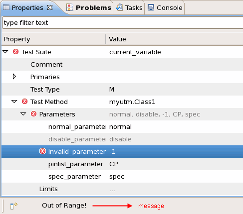

TestMethodParameterProxy
This class defines the member functions to retrieve and set the test method parameter settings in universal test method.
Class definition
- Constructor
- The member functions are to be used after the API addParameter() and getParameter(). You cannot directly create an object of it.
- Using the API
addParameter().function1().function2()...;
function1() and function2() are the member functions of TestMethodParameterProxy listed below.
getParmeter().function1(),function2()...;
function1() and function2() are the member functions of TestMethodParameterProxy listed below.
- Member functions
Member functions
- is()
bool is() const
This function returns true when the TestMethodParameterProxy object is designated to a test method parameter. Otherwise it returns false.- getValueAsString()
const std::string getValueAsString() const
This function returns the string representation of the test method parameter values.- getMode()
testmethod::TmParameterMode getMode() const
This function returns the test method parameter mode. It returns 0 for TM_PARAMETER_INPUT and 1 for TM_PARAMETER_OUTPUT.- getType()
const std::string getType() const
This function returns the parameter type. The parameter type can be int, double, string, PinString, SpecVariable, SpecValue, ContextPins or OptionList.- getDefault()
const std::string getDefault() const
This function returns the string representation of the default value of the parameter.- getOptions()
const std::string getOptions() const
This function returns the string representation of the options defined for the parameter.- isValid()
bool isValid() const
This function returns true if the parameter is valid. Otherwise it returns false.
Valid means it will not be displayed with a yellow background and a warning icon in the properties view.
- isEnabled()
isEnabled()
This function returns true if the parameter is enabled. Otherwise it returns false.
Enabled means you can change the parameter value from the test suite properties view.
- isVisible()
bool isVisible() const
This function returns true if the parameter is visible. Otherwise it returns false.
Visible means you can see the parameter from the test suite properties view.
- getMessage()
const std::string getMessage() const
This function returns the Message set for a parameter in a certain condition. It is used in the postParameterChange() function.
- setValid(...)
TestMethodParameterProxy& setValid(bool valid)
This function sets the parameter to be valid or not. It can be used in the postParameterChange() function to set a valid range for the values of the parameter. If you enter a value out of the valid range of the parameter, the parameter will be set to invalid and be displayed with a yellow background and a warning icon in the Properties view. You need change to a valid value to execute the test suite.
It returns a TestMethodParameterProxy object reference to itself. You can call other member functions of TestMethodParameterProxy after it.
Parameter valid The bool value to set. It can be true or false. - setEnabled(...)
TestMethodParameterProxy& setEnabled(bool enabled)
This function sets the parameter to be enabled or not. It can be used to define a parameter which cannot be changed. You can set the parameter to disabled when you do not want its value be changed from the Properties view. The disabled parameter is grayed out in the properties view.
It returns a TestMethodParameterProxy object reference to itself. You can call other member functions of TestMethodParameterProxy after it.
Parameter enabled The bool value to set. It can be true or false. - setVisible(...)
TestMethodParameterProxy& setVisible(bool visible)
This function sets whether the parameter can be seen in the Properties view or not. It can be used in the postParameterChange() function to hide a parameter if it is useless in some specific condition. If the parameter was set to invisible, you cannot see it from the Properties view.
It returns a TestMethodParameterProxy object reference to itself. You can call other member functions of TestMethodParameterProxy after it.
Parameter visible The bool value to set. It can be true or false. - setMessage(...)
TestMethodParameterProxy& setMessage(const std::string&message);
This function sets the massage for a parameter in a certain condition. It is used in the postParameterChange() function. This message will be displayed in the status bar when you select the parameter in the Properties view. (See the figure below.)

- setValueAsString(...)
TestMethodParameterProxy& setValueAsString(const std::string&value)
This function sets the parameter value as string.
It returns a TestMethodParameterProxy object reference to itself. You can call other member functions of TestMethodParameterProxy after it.
Parameter value The parameter value that needs to be set as string type. - setDefault(...)
TestMethodParameterProxy& setDefault(const std::string&defaultValue)
This function sets the default value for the parameter.
It returns a TestMethodParameterProxy object reference to itself. You can call other member functions of TestMethodParameterProxy after it.
Parameter defaultValue The default value for the parameter. - setOptions(...)
TestMethodParameterProxy& setOptions(const std::string&options)
This function set the options for the parameter. Separate the options with colon. If the options are defined, you can only enter one of the options as the value of the parameter.
It returns a TestMethodParameterProxy object reference to itself. You can call other member functions of TestMethodParameterProxy after it.
Parameter options The options of the parameter. Separate the options with colon (:). - setComment(...)
TestMethodParameterProxy& setComment(const std::string&comment)
This function sets the comment for the parameter. The comment can be seen when you put your mouse over the parameter name in the Properties view.
It returns a TestMethodParameterProxy object reference to itself. You can call other member functions of TestMethodParameterProxy after it.
Parameter comment The comment for the parameter.
Example
The following example shows how to control the visibility of some parameters through setting different values to another parameter. The visibility of param2 and param3 is controlled by the value of param1. When param1 is set to Show, param2 and param3 are shown. Otherwise, they are hidden in the Properties view and Flow Data editor.
protected:
string mparam1;
int mparam2;
int mparam3;
virtual void initialize()
{
addParameter("param1", "string", &mparam1).setOptions("Show:Hide").setDefault("Show");
addParameter("param2", "int", &mparam2).setDefault("1");
addParameter("param3", "int", &mparam3).setDefault("2");
}
virtual void run()
{
...
return;
}
virtual void postParameterChange(const string& parameterIdentifier)
{
bool visible = (mparam1 == "Show");
getParameter("param2").setVisible(visible);
getParameter("param3").setVisible(visible);
return;
}Functional changes
- Introduced before SmarTest 6.3.2
- SmarTest 6.5.0: New member functions isVisible(), getMessage(), setVisible() and setMessage().